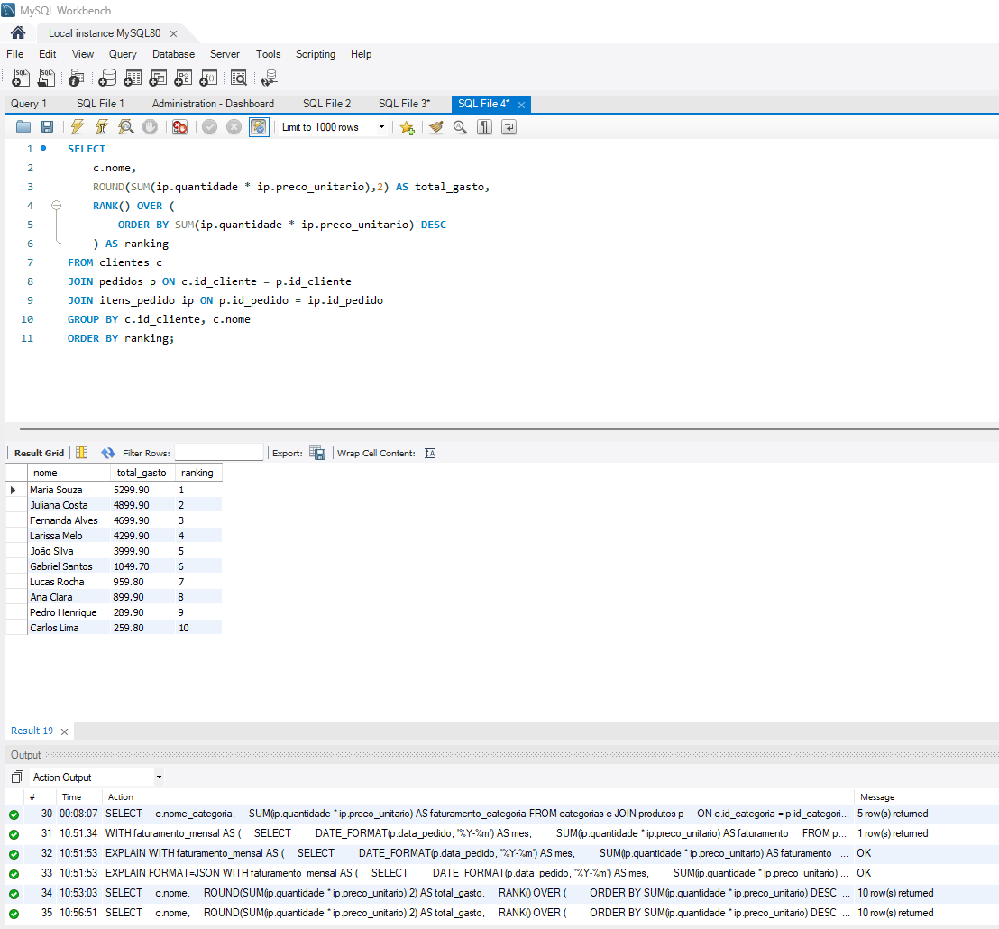

Dados & BI
Limpeza, exploração, indicadores, visualização e comunicação dos resultados.
Data Analytics · Python · Automação
Sou Karlos Eduardo, estudante de Análise e Desenvolvimento de Sistemas. Construo análises com Python e SQL, dashboards para decisão e automações que eliminam tarefas repetitivas.
Sobre mim
Minha experiência com suporte de software me ensinou a ouvir usuários, investigar problemas e explicar soluções com clareza. Hoje aplico essa base na análise de dados e no desenvolvimento de automações.
Busco uma oportunidade de entrada em Dados, Python ou RPA, onde eu possa combinar raciocínio analítico, domínio técnico e foco na melhoria contínua dos processos.
Stack & competências
Limpeza, exploração, indicadores, visualização e comunicação dos resultados.
Automação de rotinas, manipulação de arquivos e integração de etapas repetitivas.
Interfaces responsivas e fundamentos para transformar análises em produtos utilizáveis.
Projetos selecionados
Dashboard executivo construído a partir de uma base sintética completa de RH. O projeto integra geração de dados, modelagem MySQL, regras de negócio e visualizações interativas.

Análise de vendas com banco relacional e consultas criadas para responder perguntas comerciais sobre receita, produtos, clientes e desempenho temporal.
Trajetória
Suporte remoto ao sistema Clipp Store, investigação de incidentes, orientação a usuários e acompanhamento de soluções. Experiência que fortaleceu comunicação, análise de problemas e foco no cliente.
Design e desenvolvimento das interfaces de uma solução para liberação de boletos integrada à API Safe2Pay, trabalhando a ponte entre requisitos, experiência do usuário e implementação.
Formação superior em andamento (2026.1–2028.2), complementada por estudos práticos em Python, SQL, análise de dados, automação, JavaScript, APIs e controle de versão.
Próximo passo
Estou disponível para oportunidades de estágio e posições júnior. Vamos conversar sobre como posso contribuir e continuar evoluindo com o time.